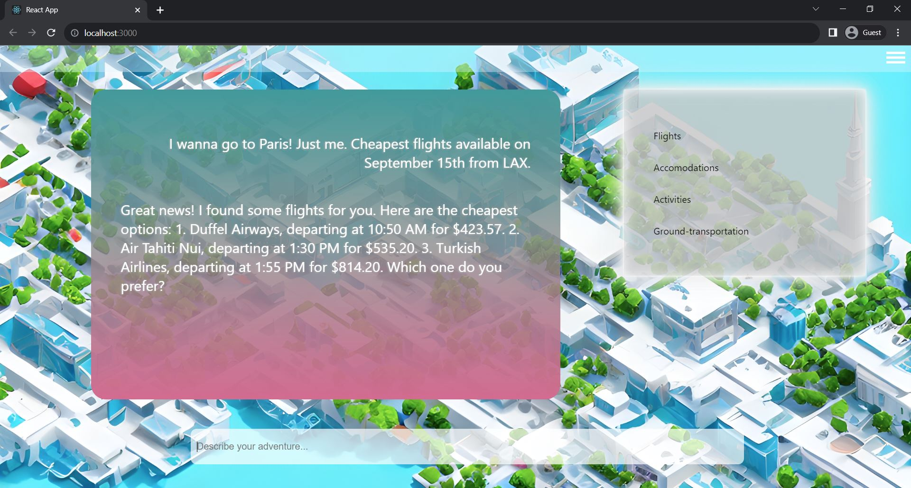

AI Travel Assistant & Planner
Comprehensive travel-planning and booking, all in one place.
This conversational Travel Planner, powered by the emergent reasoning capabilities of OpenAI's GPT-4 in combination with a series of travel APIs, reflects my technical progress and highlights my strongest skills. This project was developed over the course of a couple months, and, in spite of the distinct threat of competition from much larger entities such as Expedia, my project partners and I recognized an opportunity to move quickly on a niche that we identified as somewhat out of line with the traditional style of the big players, and treated this project as a serious product to be launched ASAP. As such, I learned a substantial amount about the business side of software production and gained invaluable knowledge about a variety of concepts and technologies. As the technical cornerstone of a team primarily versed in business, I acted as the sole engineer and developer of this application, and effectively directed discussions on our technical considerations throughout development.
Basic React Chatbot Frontend
Though I didn't have much web development experience prior to this project, I learned the fundamentals of HTML, CSS, and React.js quickly to move our project toward an MVP. I created a basic React frontend for the app, with features such as a cycle of travel-related AI-generated imagery in the background, a scrollable conversation history, and a textbox for sending new messages. GPT-4 responses are streamed directly back to the frontend live, token-by-token, for maximal responsiveness.
JS/React Frontend, Python Backend
I learned how to connect a Javascript/React frontend with a Python backend via Redis, enabling live chatbot functionality with a context of competent travel planning.
On the backend, GPT contexts are effectively managed, spliced and adapted as needed to optimize conversation costs and response accuracy. Conversation histories are saved live, to be referenced later by users.
GPT-4 + Travel APIs
Through extensive experimentation, I developed effective methods of empowering GPT with a set of tools with which it was able to successfully advise, plan, and ultimately book a variety of travel-related services and destinations. My work on developing our prompting strategy ultimately enabled our system to effectively utilize a variety of tools, such as hotel and flight APIs via Duffel and Amadeus, while balancing speed, reliability, and cost. Hallucinations were minimal, and our system was able to utilize a variety of tools to assist in a user's travel-planning needs.